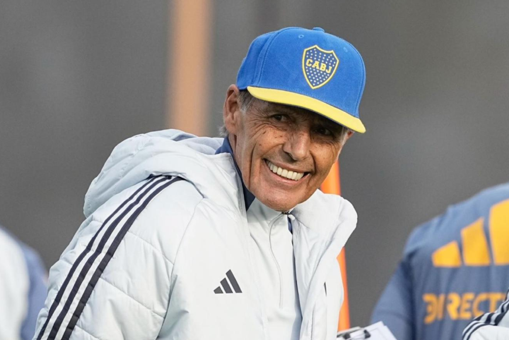

Russo, en su presentación en Boca: "Se dijeron muchas tonterías antes de mi llegada" El entrenador comenzó su tercer ciclo al mando del primer equipo del Xeneize.
MIGUEL ÁNGEL RUSSO es el nuevo entrenador de Boca, en lo que representará su tercera etapa en el cargo luego de los ciclos de 2007 y 2020-2021, y su presentación oficial es este lunes, más allá de que comenzó a trabajar con el plantel el pasado viernes. La primera imagen fue junto con el presidente Juan Román Riquelme, quien afirmó que "hoy para mí es un día diferente, tengo mucha felicidad porque presentamos al último entrenador que nos regaló la Copa, que es mi amigo. Nos dio muchas alegrías y lo ayudaremos en todo lo que podamos. Te quiero y felicidades".